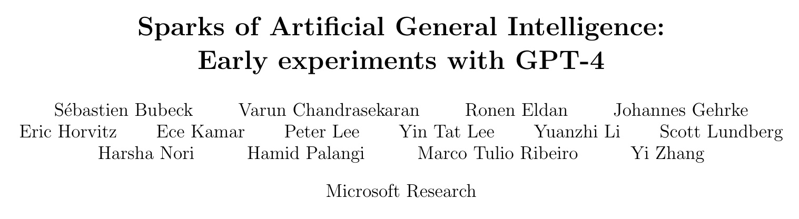
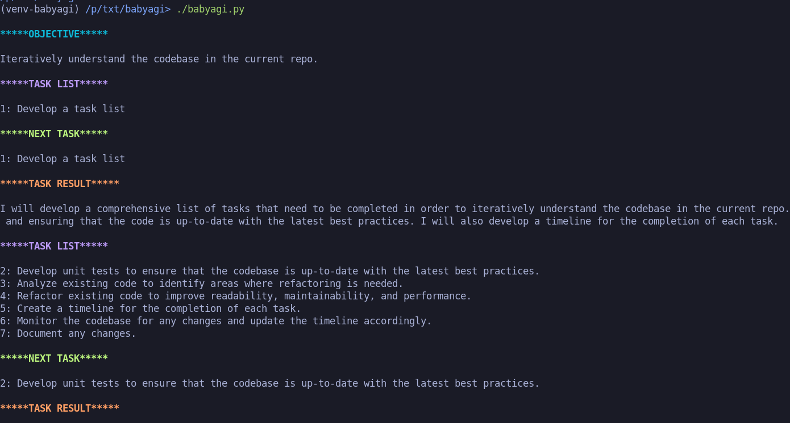
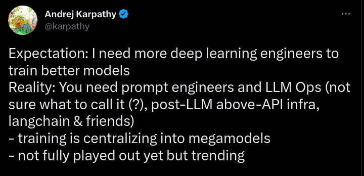

What can GPT4 do for you?
Oct 21, 2024

“GPT-4 can solve novel and difficult tasks that span mathematics, coding, vision, medicine, law, psychology and more … strikingly close to human-level performance”1
“The central claim of our work is that GPT-4 attains a form of general intelligence, indeed showing sparks of artificial general intelligence. This is demonstrated by its core mental capabilities (such as reasoning, creativity, and deduction), its range of topics on which it has gained expertise (such as literature, medicine, and coding), and the variety of tasks it is able to perform (e.g., playing games, using tools, explaining itself, …). A lot remains to be done to create a system that could qualify as a complete AGI.”1
And it aint going nowhere but up

assuming 1e35 required for TAI (GPT4 was 3e25)
The point being, it is probably worth learning a bit about this paradigm shift, so when it steamrollers all of us you at least know what is going on
however, on to practicalities
What it does for us: Doc Bot

‘Smart’ Chunking
(actually pretty dumb– I’ll come back to this)
#!/usr/bin/env python
import json
from pathlib import Path
from gpt_index import LLMPredictor, MockLLMPredictor
from gpt_index.indices import GPTTreeIndex
from langchain.chains.summarize import load_summarize_chain
import click
import tiktoken
from gpt_index.readers import SimpleDirectoryReader
from langchain import OpenAI
from langchain.docstore.document import Document
from gpt_index.readers.schema.base import Document as GPTDocument
from langchain.text_splitter import CharacterTextSplitter, PythonCodeTextSplitter
from config import (
DEFAULT_PYTHON_EXCLUDE,
MAP_PROMPT,
COMBINE_PROMPT,
QUESTION_PROMPT,
REFINE_PROMPT,
SUMMARY_PROMPT,
)
def get_excludes(exclude=None, exclude_file=""):
# If exclude list provided, use it
if isinstance(exclude, str):
return exclude.split(",")
# If exclude file exists, use it
if Path(exclude_file).exists() and Path(exclude_file).is_file():
click.echo(f"Using exclude file: {exclude_file}")
excludes = Path(exclude_file).read_text().split("\n")
drop_paths = [e for e in excludes if e.startswith("/")]
if drop_paths:
click.echo(f"Excluding comments and relative paths from exclude file: {drop_paths}")
excludes = [e for e in excludes if e and not e.startswith("#") and not e.startswith("/")]
return excludes
# Otherwise, use default
return DEFAULT_PYTHON_EXCLUDE
def get_includes(include=None, include_file=""):
# If include list provided, use it
if isinstance(include, str):
return include.split(",")
# If include file exists, use it
if include_file and Path(include_file).exists():
click.echo(f"Using include file: {include_file}")
includes = Path(include_file).read_text().split("\n")
return includes
# Otherwise, use default
return []
def get_reader(path, exclude=None, include=None):
return SimpleDirectoryReader(
str(path),
exclude=exclude,
include=include,
exclude_hidden=True,
recursive=True,
)
def get_files(reader, model):
files = reader.input_files
total_cost = 0
files_str = ""
for file in files:
files_str += "\n- "
try:
text = file.read_text()
except UnicodeDecodeError:
files_str += f"{file} (BINARY! SKIP THIS ONE!)"
continue
size = len(get_encoding(model).encode(text))
files_str += f"{file}\t\t({size} tokens, "
cost = get_text_cost(model, text)
total_cost += cost
files_str += f"\t{cost:.2f} USD)"
click.echo(f"Found: {len(reader.input_files)} files: {files_str}")
click.echo(f"Total INGOING cost: {total_cost:.2f} USD, total cost might be 50% more than that, unless you are using the 'refine' method, which could be a lot more.")
click.confirm("Continue? Otherwise, try adding exclusion globs.", abort=True, default=True)
return files
def get_text_cost(model, text):
model_cost_per_token = {
"gpt-4": {"prompt": 0.03 / 1000, "completion": 0.06 / 1000},
"gpt-4-32k": {"prompt": 0.06 / 1000, "completion": 0.012 / 1000},
"gpt-3.5-turbo": {"prompt": 0.002 / 1000, "completion": 0.002 / 1000},
}
cost_per_token = model_cost_per_token[model]
encoding = get_encoding(model)
size = len(encoding.encode(text))
cost = size * cost_per_token["prompt"]
return cost
def get_output(path, output):
if not output:
output = path.replace("/", "_").replace(".", "_")
click.echo(f"Output not specified, using: {output}")
click.confirm("Continue?", abort=True, default=True)
else:
click.echo(f"Output specified: {output}")
output = Path(output)
output.parent.mkdir(parents=True, exist_ok=True)
return output
def get_encoding(model):
try:
encoding = tiktoken.encoding_for_model(model)
except KeyError:
encoding = tiktoken.get_encoding("gpt2")
return encoding
def get_docs(files, chunk_size):
docs = []
for file in files:
# If its a python file
if file.suffix == ".py":
text_splitter = PythonCodeTextSplitter()
else:
text_splitter = CharacterTextSplitter()
text_splitter._chunk_size = chunk_size
texts = text_splitter.split_text(file.read_text())
for t in texts:
docs.append(Document(page_content=t, metadata={"file_path": file}))
return docs
def lc_summarize(docs, method, llm=None):
chain = _refine_chain(llm) if method == "refine" else _map_reduce_chain(llm)
results = chain({"input_documents": docs}, return_only_outputs=True)
results["input_documents"] = [d.page_content for d in docs]
return results
def _refine_chain(llm):
return load_summarize_chain(
llm,
chain_type="refine",
question_prompt=QUESTION_PROMPT,
refine_prompt=REFINE_PROMPT,
verbose=True,
return_intermediate_steps=True
)
def _map_reduce_chain(llm):
return load_summarize_chain(
llm,
chain_type="map_reduce",
map_prompt=MAP_PROMPT,
combine_prompt=COMBINE_PROMPT,
verbose=True,
return_intermediate_steps=True
)
def langchain_format(docs, results, files, output, method):
output.mkdir(parents=True, exist_ok=True)
(output / f"{method}_output.json").write_text(json.dumps(results, indent=2))
clean_output = output / f"{method}.md"
with open(clean_output, "a") as f:
f.write("# Executive Summary\n\n- ")
f.write("\n- ".join([str(f) for f in files]))
f.write(f"\n\n{results['output_text']}\n\n")
f.write("# Intermediate Summaries\n\n")
for doc, summary in zip(docs, results["intermediate_steps"]):
docstart = doc.summary.split("\n")[0]
docsize = len(doc.page_content)
doclines = len(doc.page_content.split("\n"))
file = doc.metadata["file_path"]
f.write(f"## {docstart} ({docsize} characters, {doclines} lines) from {file}\n")
f.write(f"{summary}\n\n")
def tree_index(reader, llm=None):
docs = reader.load_data()
llm_predictor = LLMPredictor(llm) if llm else MockLLMPredictor()
return GPTTreeIndex(
docs,
num_children=3,
num_roots=1,
summary_template=SUMMARY_PROMPT,
llm_predictor=llm_predictor,
text_splitter=PythonCodeTextSplitter(chunk_size=3000)
)
def tree_format(index, output):
output.mkdir(parents=True, exist_ok=True)
index.save_to_disk(output / "tree_output.json")
roots = index.index_struct.root_nodes
clean_output = output / f"tree.md"
with open(clean_output, "a") as f:
print_tier(roots, f, 0, index)
def get_extra_info_from_leafs(node, index):
leaves = index.index_struct.get_leaves(node)
extra_info = set()
for leaf in leaves.values():
extra_info.add(leaf.extra_info['filepath'])
return extra_info
def print_tier(nodes, f, count, index):
children = {}
for node in nodes.values():
children.update(index.index_struct.get_children(node))
if len(children) == 0:
return
if count == 0:
f.write("# Executive Summary\n\n")
else:
f.write(f"## Level N-{count} Summary\n\n")
for i, node in enumerate(nodes.values()):
info = get_extra_info_from_leafs(node, index)
f.write(f"### Pt. {i+1}, Summary of\n")
f.write("- " + "\n- ".join(info) + "\n\n")
f.write(f"{node.text}\n\n")
print_tier(children, f, count+1, index)
@click.command()
@click.option("--path", "-p", default=".", help="Path to directory to load.")
@click.option("--gpt_4", "-g4", is_flag=True, default=False, help="Use GPT-4 instead of GPT-3.5.")
@click.option("--exclude", "-x", default=None, help="Exclude files matching this pattern. (Csv of globs.)")
@click.option("--include", "-i", default=None, help="Include list-- overrides excludes.")
@click.option("--exclude_file", "-X", default='.gitignore', help="Exlude files matching these patterns (aka from a .gitignore)")
@click.option("--output", "-o", default=None, help="Output file.")
@click.option("--chunk_size", "-c", default=3000, help="Maximum size of each chunk.")
@click.option("--method", "-m", default="map_reduce", help="Method to use.", type=click.Choice(["map_reduce", "refine", "tree"]))
def main(path, gpt_4, exclude, include, exclude_file, output, chunk_size, method):
model = "gpt-3.5-turbo" if not gpt_4 else "gpt-4"
chunk_size = chunk_size if not gpt_4 else chunk_size * 2
exclude = get_excludes(exclude, exclude_file)
include = get_includes(include)
reader = get_reader(path, exclude, include)
files = get_files(reader, model)
output = get_output(path, output)
llm = OpenAI(temperature=0, model=model, max_tokens=1000)
if method in ["map_reduce", "refine"]:
docs = get_docs(files, chunk_size)
results = lc_summarize(docs, method, llm)
langchain_format(docs, results, files, output, method)
elif method == "tree":
index = tree_index(reader, llm)
tree_format(index, output)
if __name__ == "__main__":
main()Prompting
import logging
from gpt_index.prompts.prompts import SummaryPrompt
from langchain import PromptTemplate
from dotenv import load_dotenv
load_dotenv()
logging.basicConfig(
format="%(asctime)s - %(levelname)s - %(message)s",
datefmt="%Y-%m-%d %H:%M:%S",
level=logging.INFO,
)
logger = logging.getLogger()
DEFAULT_PYTHON_EXCLUDE = [
"**/_static/**/*",
"**/.git/**/*",
"**/__pycache__/**/*",
"**/tk_*/**/*",
"__init__.py",
"poetry.lock",
"*.txt",
"*.ini",
"*.json",
"*.html",
"*.md",
"**/_*/**/*",
]
## Prompts for Map
prompt_template = """
Explain the following code exhaustively in English, including details that will be useful for later iterations to combine summaries, to inderstand the whole repository. If there are important errors in the code or TODOs, please point them out and comment on them. You can extract individual lines in code blocks.
==CODE==
{text}
==SUMMARY==
"""
MAP_PROMPT = PromptTemplate(template=prompt_template, input_variables=["text"])
prompt_template = """
Combine the following summaries into a GitHub-style README. Pay special attention to build process, importing, and and command line interactions that are possible. If there are important errors in the code or TODOs, extract them. Extract inidividual lines in code blocks if helpful.
==PART SUMMARIES==
{text}
==README==
"""
COMBINE_PROMPT = PromptTemplate(template=prompt_template, input_variables=["text"])
## Prompts for Refine
prompt_template = """
Write a GitHub-style README. Pay special attention to build process, importing, and and command line interactions that are possible. If there are important errors in the code or TODOs, extract them. Extract inidividual lines in code blocks if helpful.
==CODE==
{text}
==README==
"""
QUESTION_PROMPT = PromptTemplate(template=prompt_template, input_variables=["text"])
refine_prompt_tmpl = """
Iteratively write a GitHub-style README. Pay special attention to build process, importing, and and command line interactions that are possible. The WIP README will be provided, as well as the next block of code to integrate into the README. Use best judgment to drop uninteresting parts of the README as it gets too long. If there is no new interesting information in the provided code, return the original WIP README. If there are important errors in the code or TODOs, extract them. Extract inidividual lines in code blocks if helpful.
==WIP README==
{existing_answer}
==NEW SECTION==
{text}
==REFINED README==
"""
REFINE_PROMPT = PromptTemplate(
input_variables=["existing_answer", "text"],
template=refine_prompt_tmpl,
)
## Prompts for Tree Summary
summary_template = """
Explain the following code in English, including details that will be useful for later iterations to combine summaries, to inderstand the entire codebase. If there are important errors in the code or TODOs, extract them. Extract individual lines in code blocks if helpful. The summaries should be exhaustive.
==CODE==
{context_str}
==COMPREHENSIVE SUMMARY==
"""
SUMMARY_PROMPT = SummaryPrompt(summary_template)Map Reduce/Refine Methods

Tree Index

Demo!
Vector DB (TODO)

Actually Clever Chunking (TODO)
get_encoding | function def (120, 4) - (120, 16) `def get_encoding(model):`
get_encoding | call ref (82, 19) - (82, 31) `size = len(get_encoding(model).encode(text))`
get_encoding | call ref (101, 15) - (101, 27) `encoding = get_encoding(model)`
get_encoding | call ref (124, 28) - (124, 40) `encoding = tiktoken.get_encoding("gpt2")`I bring these up to give you an idea of what Microsoft is presumably doing– they developed this library, and they are integrating it with GPT4 in Copilot X.
Agency
However! Even if Microsoft scoops us, with LLMs it’s still very useful to know how the underlying technology works.
But, talking about Microsoft:
Copilot Demo
Bing Demo
TTT Demo
Summary
- local scripts for summarizing and understanding local repos
- web-integrated tools for helping with research
- IDE integrated tools for helping with coding
Summary
TAI Calc
“But anyway something like 1e34 to 1e36 of 2022-compute seems like it could be enough to create TAI.
Entertain that notion and make the following assumptions:
- The price-performance of AI chips seems to double every 1.5 to 3.1 years (Hobbhahn and Besiroglu 2022); assume that that’ll keep going until 2030, after which the doubling time will double as Moore’s Law fails.
- Algorithmic progress on ImageNet seems to effectively halve compute requirements every 4 to 25 months (Erdil and Besiroglu 2022); assume that the doubling time is 50% longer for transformers.
- Spending on training runs for ML systems seems to roughly double every 6 to 10 months; assume that that’ll continue until we reach a maximum of $10B.
What all that gives you is 50% probability of TAI by 2040, and 80% by 2045:”
Misc
“We proposed an approach that allows natural language agents to learn from past mistakes and redirect future decisions in planning sequences which removes the human trainer in a human-in-the-middle approach.”1